Available for opportunities
Vamshi Gunnala / Salesforce Enthusiast
Thoughtful solutions
built with Salesforce
I’m Vamshi Gunnala, a Salesforce professional focused on configuration, development, and automation. I build reliable, user-friendly solutions that simplify business processes and support day-to-day operations.
8+Years of experience
6Certifications
M.S.Data Analytics Engineering
Warner Bros. DiscoveryCurrently working at
Scroll to explore Curious and thoughtful
Always learning
ABOUT ME
I’m Vamshi Gunnala, a Salesforce Enthusiast who enjoys bringing business ideas to life on the platform.
My experience spans Salesforce configuration, integrations, data validation, automation, and release testing. I enjoy understanding the business process behind a system as much as the technology itself.
I deepen my development skills through hands-on projects with Lightning Web Components and Apex. I also love reading about advances in artificial intelligence and exploring AI ideas through hands-on projects.
Core technical capabilities
Salesforce configuration & Flow
Lightning Web Components & Apex
Sales Cloud & Service Cloud
REST APIs & integration testing
SOQL & data validation
Test automation & release quality
Education
M.S. Data Analytics EngineeringGeorge Mason UniversityB.Tech Mechanical EngineeringTools, craft
and curiosity
From configuration and code to validation and release, these are the tools and practices I use to work through a problem.
Configuration
Development & data
Quality & automation
Integration & APIs
Delivery & AI
Data & Infrastructure
Professional Experience
CAREER JOURNEY
- Jul 2024 – Present
Salesforce Consultant
Warner Bros. DiscoveryAtlanta, GA
- Developed reusable Provar tests for Sales Cloud workflows, field validations and approval routing.
- Collaborated with configuration and development teams on Sales Cloud workflows and approval changes.
- Validated Airtable and Appian integrations and checked migrated Salesforce records using SOQL.
- Supported Salesforce integration changes involving field mappings, synchronization and error handling.
- Aug 2023 – Jun 2024
Salesforce Consultant
NeighborWorks AmericaWashington, D.C.
- Validated housing counseling workflows across client intake, case management and service tracking.
- Supported Salesforce configuration for housing-service workflows, including scheduling and Experience Cloud portal access.
- Tested scheduling, document storage and Experience Cloud portal access, including regression testing after updates.
- Supported changes to Lightning components and page layouts following configuration and managed-package updates.
- Oct 2021 – Jul 2023
Salesforce Consultant
State of MarylandBaltimore, MD
- Created automated tests for public-health case intake, contact investigation and reporting workflows.
- Collaborated with Salesforce configuration and development teams on case management workflows.
- Tested vaccination scheduling and validated address and appointment integrations using Postman and SOQL.
- Supported changes to scheduling, confirmations and provider workflows.
- Mar 2019 – Sep 2021
Salesforce Consultant
CaterpillarChicago, IL
- Validated Sales Cloud workflows for leads, accounts, opportunities, products, quotes and campaigns.
- Configured Sales Cloud processes and developed lead and opportunity functionality using Apex, Visualforce and Lightning components.
- Verified discount approvals and tested REST integrations, onboarding flows and notifications.
- Supported Salesforce integration and onboarding automation using REST APIs, flows and validation rules.
- Aug 2017 – Feb 2019
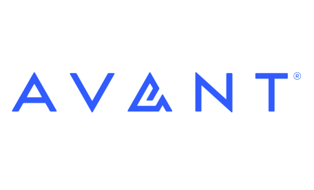
Salesforce Consultant
Avant
- Tested registration, referral tracking, case assignment and access controls across Salesforce records.
- Customized Sales Cloud configuration and developed Apex and Visualforce functionality for customer workflows.
- Supported UAT, documented defects and retested fixes before releases.
- Configured Service Cloud case management, queues, assignment rules and security settings.
- May 2015 – Jun 2017
Salesforce Analyst
Uber
- Tested driver onboarding, document verification and partner activation workflows.
- Developed onboarding functionality using Apex, Visualforce and SOQL.
- Verified approval routing, notifications and synchronized partner records.
- Configured onboarding automation and support case routing using validation rules, approval processes and Salesforce workflows.
FEATURED WORK
What I Build When I Get Curious
Hands-on Salesforce projects, experiments with Apex and Lightning Web Components, and AI ideas I’m putting to the test.
01
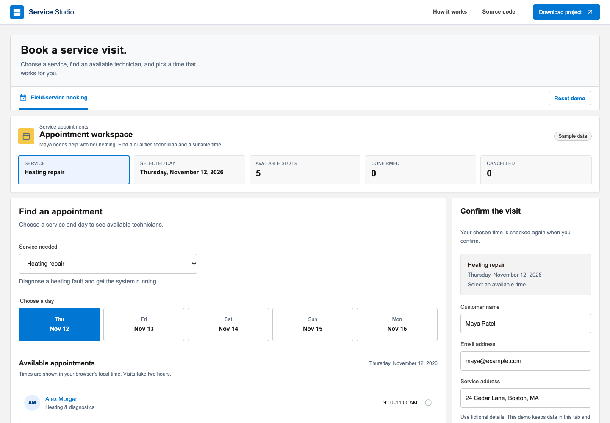
Service Studio
A field-service booking workflow that matches a service request with an available technician.
Explore demo ↗02
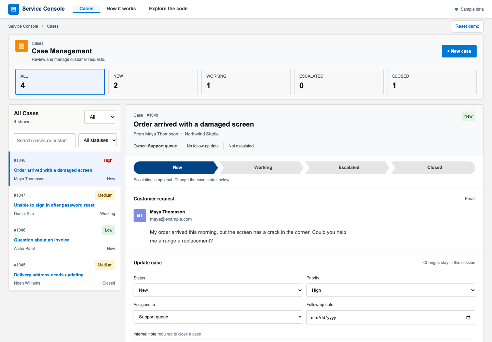
Case Management
A support workspace for handling cases, priorities, follow-ups and escalation.
Explore demo ↗03
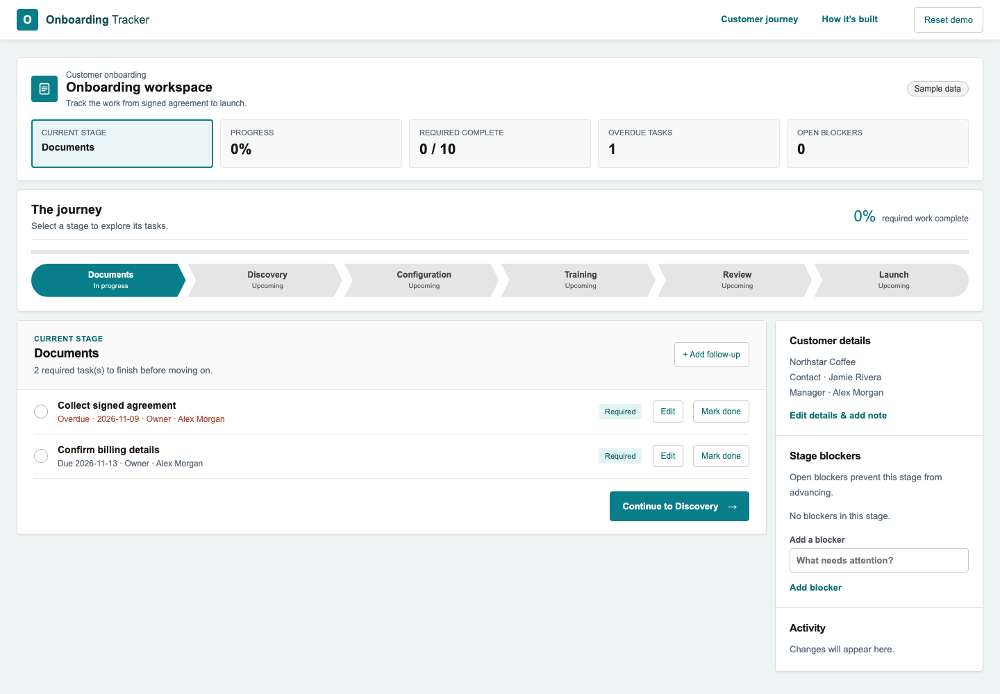
Onboarding Tracker
A customer onboarding journey with stages, follow-up tasks, blockers and progress tracking.
Explore demo ↗04
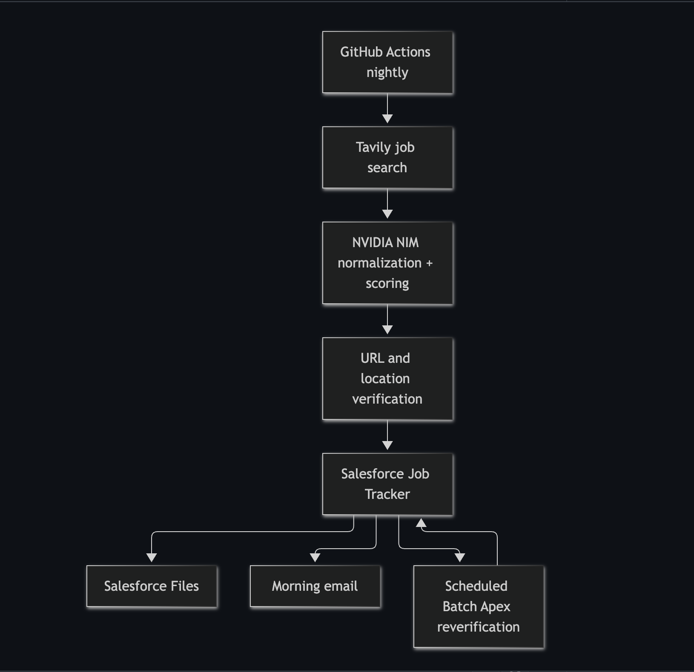
Salesforce Job Search Agent
An automation that discovers job postings, checks links, scores matches and tracks results in Salesforce.
19
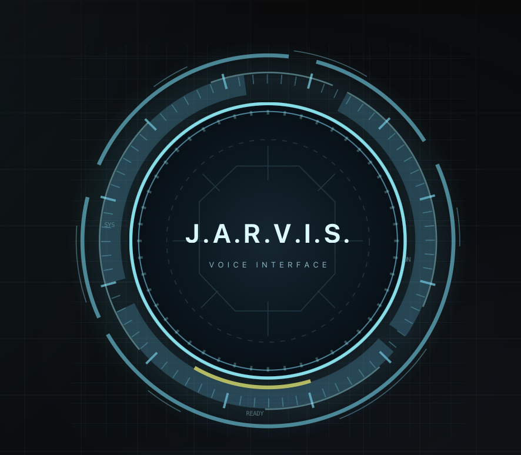
JARVIS Personal Assistant
A local-first personal assistant for voice conversations, routines and saved workspaces.
18
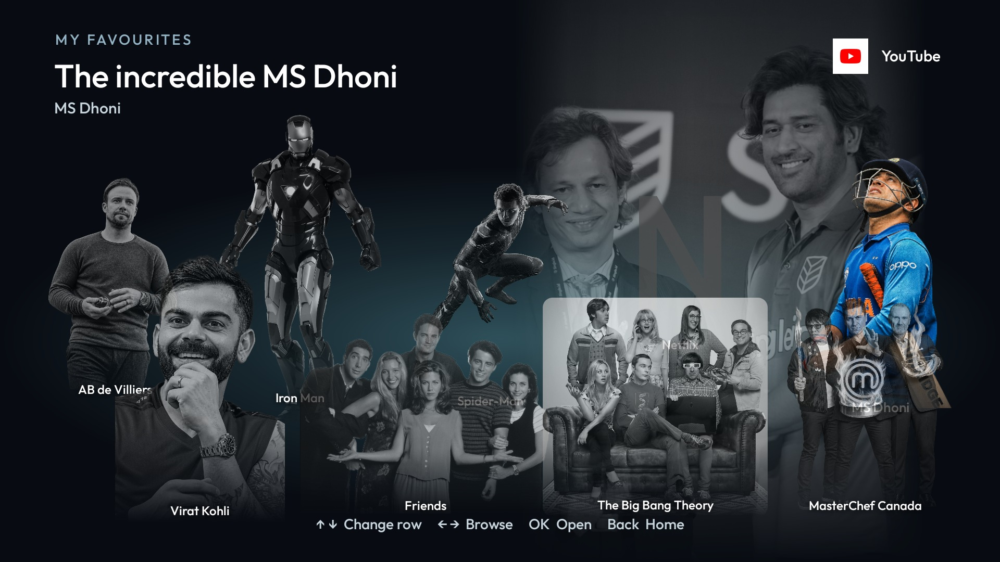
CleanYourTV
A customized Android TV and Google TV home screen with favourites, browsing and a cricket-inspired theme.
View on GitHub ↗04
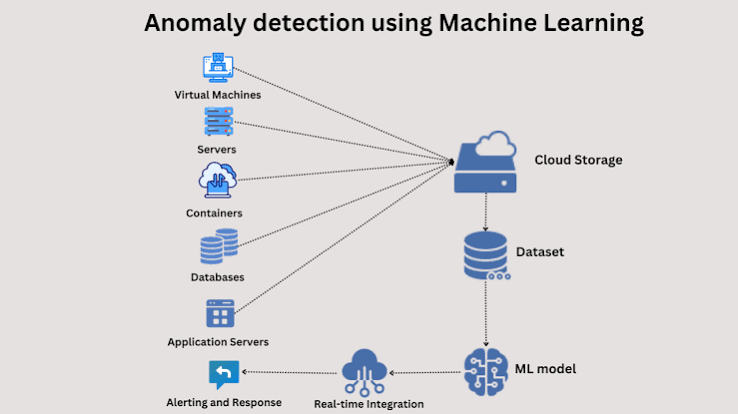
Illustrative imageAnomaly Detection
An exploration of anomaly detection in images using computer vision.
View on GitHub ↗05
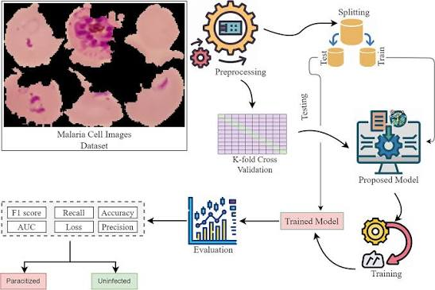
Illustrative imageMalaria Cell Detection
A classification project exploring image-based detection using cell image datasets.
View on GitHub ↗06Illustrative image
Anime Recommendation
A recommendation project exploring similarities in anime ratings, genres and preferences.
View on GitHub ↗07
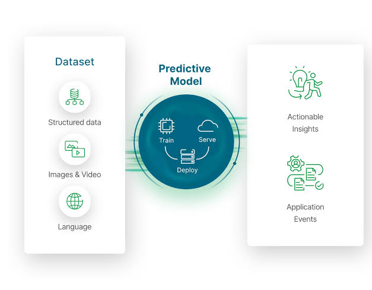
Illustrative image08
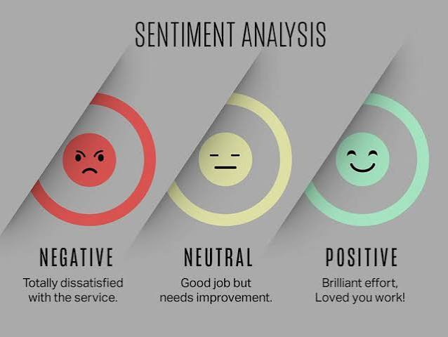
Illustrative imageSentiment Analysis
An exploration of sentiment analysis on Amazon reviews using VADER.
View on GitHub ↗09Illustrative image
Coronavirus Visualizations
A dashboard visualizing historical global coronavirus case data.
View on GitHub ↗10
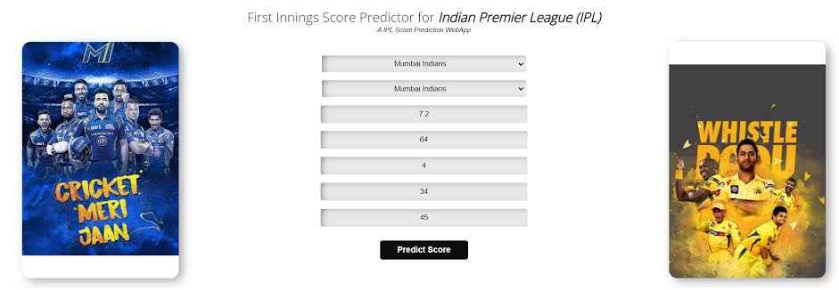
Illustrative image11
AI PROJECTSAutomated Machine LearningAutoML · Python
12
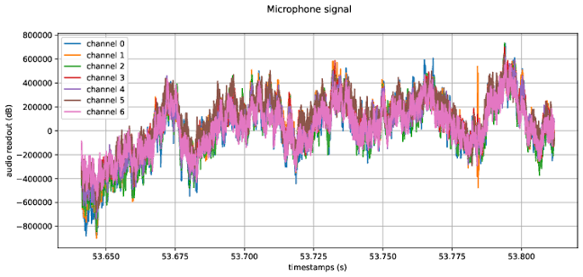
Illustrative imageSensor Data with Python
A draft project for working with and decoding sensor data in Python.
View on GitHub ↗13
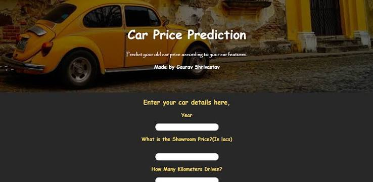
Illustrative image16
OTHEROmniRush StarterStarter kit · Repository
No projects in this category yet.
CREDENTIALS
Certifications & training
Credentials earned through continued learning on the Salesforce platform.Salesforce Certified Agentforce Specialist
August 2, 2026
Salesforce Certified Business Analyst
May 5, 2026
Salesforce Certified Platform App Builder
August 9, 2025
Salesforce Certified Platform Developer
September 19, 2020
Salesforce Certified Platform Administrator
June 20, 2020
Copado Certified Copado AI
Issued 03-09-2026
Also: Agentblazer Innovator
Let’s Build Something
Exceptional Together
I’m open to opportunities to work on Salesforce projects, solve problems, and keep learning. Feel free to reach out.